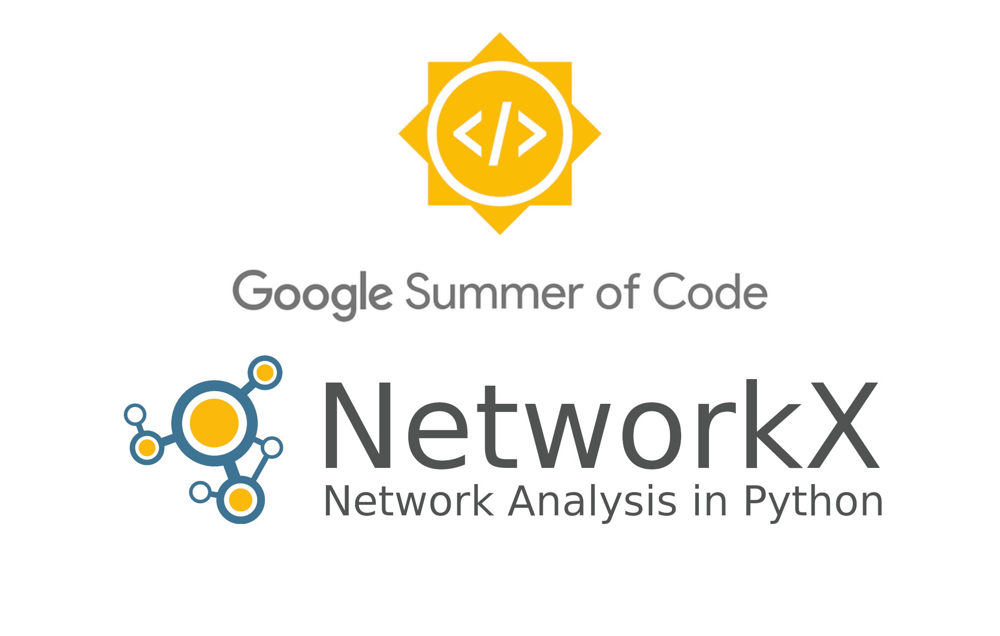
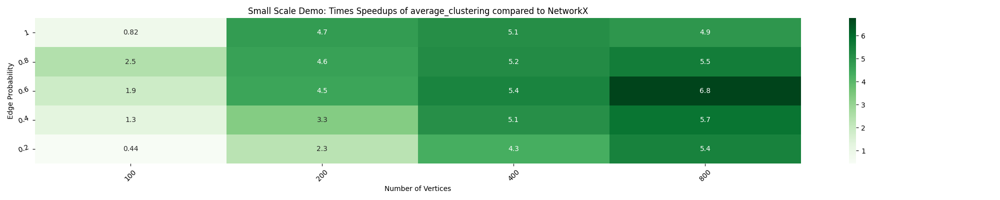
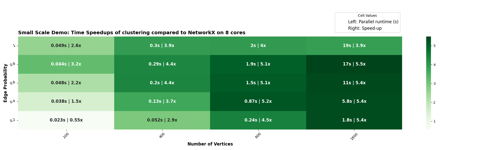

Final Report
Adding embarassingly parallel algorithms to nx-parallel
Mentors: Dan Schult, Aditi Juneja
Timeline: May 2025 - August 2025

Abstract
This report summarizes my work during Google Summer of Code 2025 on the nx-parallel project, a parallel backend for NetworkX that leverages joblib to run parallel graph algorithms. My contributions included switching the default configuration to use all available cores, refining documentation, and developing a more reliable timing script to reduce measurement variability. I also improved ASV benchmarks by adding a setup function and introduced a should_run mechanism to decide when the parallel backend should be applied. Additionally, I implemented several embarrassingly parallel algorithms, analyzed their performance speedups, and revisited existing implementations to optimize them further.
For a more detailed discussion of the solution approaches, please refer to my blogs.
Background
nx-parallel is a backend for NetworkX that speeds up graph algorithms by running them in parallel with joblib. Before the coding phase, I spent time strengthening the project’s foundation. I fixed utility functions like chunks, which had been giving wrong results because of parameter handling issues, and refactored get_all_functions to make it more reliable. I also suggested changing the default configuration so that NetworkX uses all available cores (n_jobs=-1) instead of sticking with joblib’s default (None). These early fixes and adjustments set the stage for the larger developments that came during the coding phase.
Contributions
Adding Embarassingly parallel algorithms
The primary objective of the project was to implement seven embarrassingly parallel algorithms. By the end of the coding phase, around nineteen such graph algorithms were added to nx-parallel:
| File | Functions |
|---|---|
cluster.py |
triangles, clustering, average_clustering |
link_prediction.py |
apply_prediction1, jaccard_coefficient, resource_allocation_index, adamic_adar_index, preferential_attachment, common_neighbor_centrality, cn_soundarajan_hopcroft, ra_index_soundarajan_hopcroft, within_inter_cluster |
harmonic.py |
harmonic_centrality |
neighbor_degree.py |
average_neighbor_degree |
attracting.py |
number_attracting_components |
connected.py |
number_connected_components |
strongly_connected.py |
number_strongly_connected_components |
weakly_connected.py |
number_weakly_connected_components |
dag.py |
colliders, v_structures |
1 A private parallel helper function that applies each internal prediction function used by the link prediction algorithms across multiple cores.
Working with these algorithms gave me the chance to explore a wide range of challenges in parallel graph computation. Along the way, I gained insight into why some algorithms achieve significant speedups while others do not. For example, certain algorithms scale well on sparse graphs but lose their performance advantage on denser graphs due to the overhead of serializing graph data and distributing work across multiple processes. In other cases, speedup slows down as the number of nodes increases because the overhead of chunking tasks, pickling/unpickling, and scheduling workers grows.
I also encountered implementation-specific constraints. Returning generators from within per-chunk functions, for instance, caused issues since generators cannot be pickled for communication between worker processes. Similarly, tuning parameters like max_chunk_size proved crucial– smaller chunks benefited algorithms needing fine-grained load balancing, while larger chunks improved efficiency by reducing scheduling overhead.
These explorations not only deepened my understanding of parallel execution trade-offs in graph algorithms but also helped shape a set of practical guidelines for when and how parallelization in nx-parallel provides the most benefit.
Improving the timing script (ref. PR#114)
The earlier timing script produced inconsistent results, sometimes showing decreasing speedups with more nodes or cores. I replaced it with a timeit-based script that repeats measurements and records the minimum runtime, yielding more stable and accurate results. The impact of this change can be seen below:
Old heatmap:

New heatmap: 
Adding a should_run parameter (ref. PR#123)
A should_run parameter was added to control when the parallel backend is used. By default, it activates only when multiple jobs are available, avoiding parallel execution on a single core. Other policies handle cases where parallelism is ineffective– for example, when speedup is consistently low, the graph is very small, or it’s too dense. The appropriate policy is passed via the _configure_if_nx_active decorator, making the backend adaptable and preventing wasted resources in scenarios where parallelism provides little or no benefit.
Switching the default config to NetworkX (ref. PR#122)
Previously, nx-parallel used Joblib’s default (n_jobs=None) and ran on a single core unless explicitly changed. I switched the defaults to NetworkX’s config and set n_jobs = -1, so the config system now uses all available cores automatically. Hence, the change required a thorough update of the documentation to ensure it accurately reflects the new configuration.
Implement mem-mapping
To reduce the memory overhead of passing large graphs between processes, I introduced memmapping for algorithms where the adjacency matrix is first converted to a NumPy array and stored on disk using Joblib. This allows all processes to share the same underlying file segment instead of creating separate in-memory copies, significantly improving efficiency for large graphs. I applied this approach to is_reachable (ref. PR#119), but it can be extended to other algorithms as needed.
Adding setup functions to benchmarks (ref. PR#126)
Introduced a setup function in each benchmark class to handle graph creation and other external computations before timing the algorithm.
Work links
GSoC blogs: https://github.com/akshitasure12/networkx-blogs/tree/main/blogs
PRs opened
The table below lists all the PRs I opened during the GSoC coding phase in both the nx-parallel and NetworkX repositories, along with their merge status.
| PR | Link | Status |
|---|---|---|
parallel implementation of triangles |
PR#106 | |
adding a custom marker to avoid pytest.mark.order warning |
PR#107 | |
refactor chunks() to correctly use n_jobs |
PR#112 | |
| improve the timing script | PR#114 | |
parallel implementation of number_ algorithms |
PR#117 | |
modify is_reachable() to use mem-mapping approach |
PR#119 | |
optimise is_reachable() in NetworkX |
PR#8112 | |
| remove test order dependency via context managers | PR#120 | |
make n_jobs=-1 as defualt |
PR#122 | |
add should_run functionality |
PR#123 | |
parallel implementation of harmonic_centrality |
PR#124 | |
| optimise harmonic centrality | PR#8158 | |
| refactor ASV benchmarks with setup functions | PR#126 | |
parallel implementation of link_prediction algorithms |
PR#127 | |
refactor test_get_functions_with_get_chunks |
PR#128 | |
update test_get_chunks for new algorithms |
PR#129 | |
parallel implementation of clustering and average_clustering |
PR#130 | |
uses pytest.raises as context |
PR#8170 | |
parallel implementation of average_neighbor_degree |
PR#132 | |
move assign_algorithms outside BackendInterface class |
PR#133 | |
parallel implementation of v_structures and colliders |
PR#134 | |
simplify node selection using nbunch_iter() |
PR#135 | |
| post merge refinement | PR#138 | |
add should_run for when nodes=None |
PR#141 | |
| clean up | PR#142 |
Issues Raised
The table below summarizes the key issues identified and addressed during the GSoC coding phase in both the nx-parallel and NetworkX repositories, along with their current status.
| Issue Description | Link | Status |
|---|---|---|
get_all_functions() is not returning args and kwargs of the functions |
PR#94 | |
Incorrect passing of num_in_chunk as n_jobs in chunks() |
PR#110 | |
set n_jobs=-1 as default |
PR#111 | |
set should_run=False unless nodes is None |
PR#110 |
Key Learnings and Challenges
Reflecting on my GSoC experience, I’m amazed at how much I’ve grown over the course of the program. One of the biggest lessons I’ve learned is the true value of documentation—not just as a formality, but as a way to communicate ideas clearly and leave a record of insights for others (and even for myself in the future). I’ve developed the habit of recording my findings as I go, and over time, I’ve become more mindful about keeping things concise, relevant, and easy to follow.
This journey has also made me naturally more curious. I now find myself constantly asking why something works the way it does and digging deeper to understand it. Alongside that curiosity, I’ve learned the importance of asking questions and seeking clarification from mentors without hesitation. Collaborating in an open-source community has shown me just how valuable discussions are—they not only improve the quality of code but also broaden your perspective on different ways to tackle a problem.
One of the biggest challenges I faced was balancing focus on the defined tasks with the temptation to dive too deeply into side quests. It’s easy to get carried away chasing rabbit holes, but I had to remind myself to stay grounded in the project’s goals while still leaving room for curiosity and experimentation. Finding that balance wasn’t always easy, but it taught me a lot about prioritization and staying organized.
Conclusion
The GSoC 2025 experience has truly been one of a kind. It helped me grow into a more well-rounded developer, going far beyond just “writing code.” Compared to my original proposal, by the end of the summer I had contributed to many more aspects of the project than initially planned. This growth came from becoming increasingly comfortable with the codebase, which gave me the confidence to explore, experiment, and take initiative in new directions. Compared to my original proposal, by the end of the summer I had contributed to many more aspects of the project than initially planned. This growth came from becoming increasingly comfortable with the codebase, which gave me the confidence to explore, experiment, and take initiative in new directions. Looking ahead, I plan to remain an active member of the NetworkX and nx-parallel communities— improving features, and contributing new ideas to advance the project. More importantly, I look forward to continuing the habit of learning, and giving back to the open source community.
Achnowledgements
I would like to sincerely thank my mentors, Dan Schult and Aditi Juneja, for their invaluable guidance and support throughout my GSoC journey. Their thoughtful reviews not only helped me refine my work but also encouraged me to pay close attention to even the smallest details. The mid-term review, in particular, was especially insightful, helping me recognize my strengths while highlighting areas for growth and motivating me to continually improve.
I am deeply grateful for their time, patience, and encouragement. I would also like to thank Google Summer of Code for providing me the opportunity to contribute to such an inspiring open-source community and to learn in a collaborative and supportive environment.
© 2025 Akshita Sure